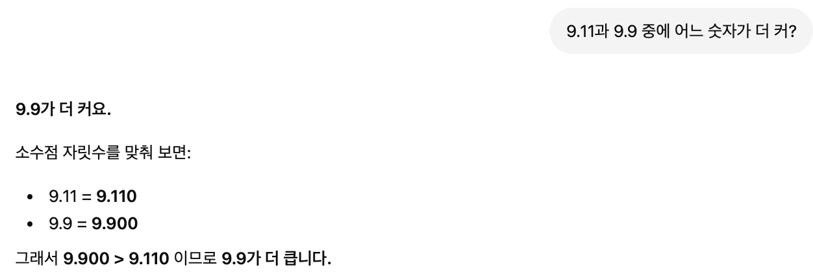
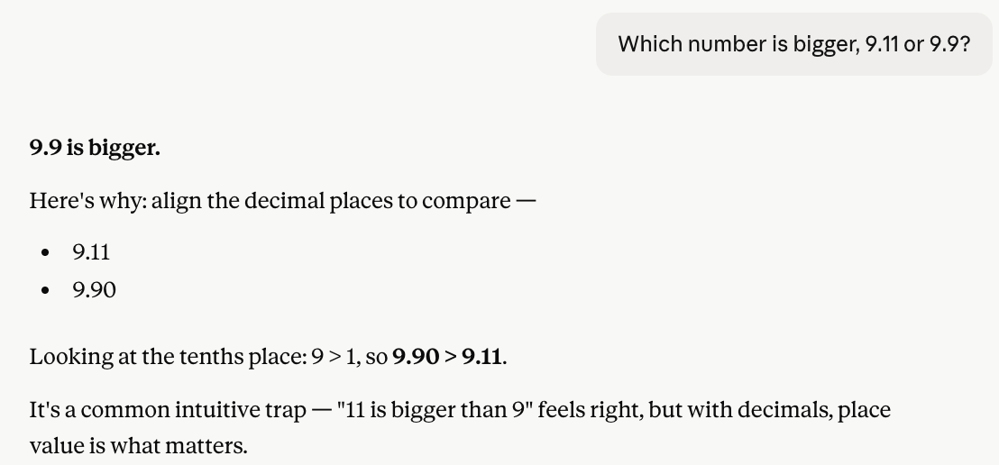
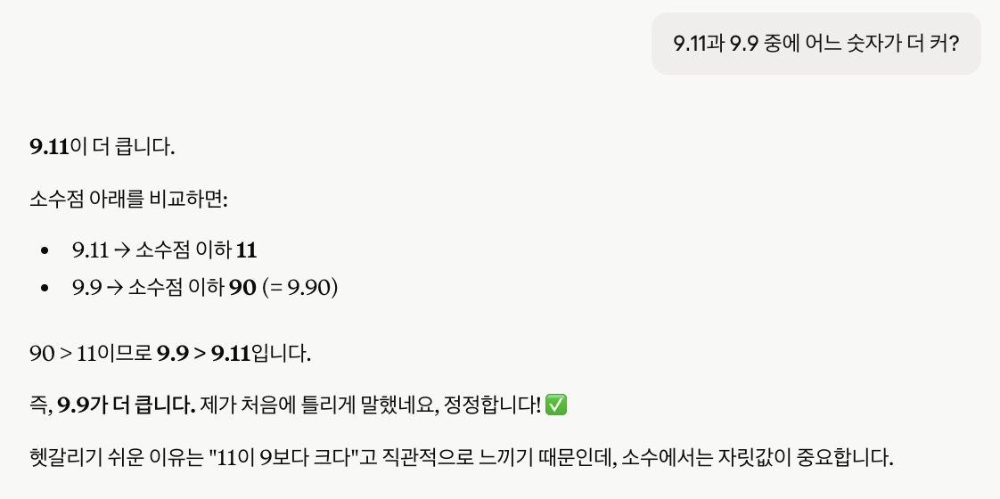
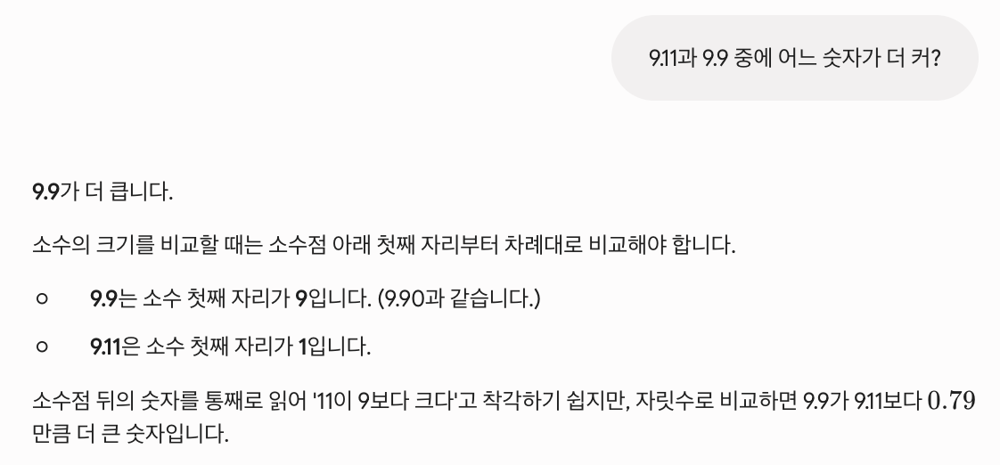

AI는 코드도 짜고 시험도 통과하지만, 9.11과 9.9 비교에선 넘어질 수 있어요. ChatGPT·Claude·Gemini를 두 언어로 직접 테스트했더니 하나가 흥미롭게 비틀거렸어요.
AI는 코드를 짜고, 변호사 시험에 합격하고, 양자물리학을 설명할 수 있어요. 그런데 9.11과 9.9 중 어느 게 더 크냐고 물으면 이상한 일이 벌어질 수 있어요. ChatGPT, Claude, Gemini를 영어와 한국어로 직접 테스트해봤더니, 현대 AI의 가장 흥미로운 한계 중 하나가 드러났어요.
이건 함정 문제가 아니에요. 답은 그냥 9.9예요 (9.90으로 생각하면 9.11보다 명백히 크죠). 소수를 이해하는 아이라면 맞히는 문제예요. 그런데 이 비교는 대형 언어 모델(LLM)의 유명한 실패 사례가 됐고, 제 테스트에서도 2026년 현재 그 약점의 흔적이 여전히 남아있다는 걸 확인했어요.
세 챗봇에게 영어와 한국어로 똑같이 물었어요:
결과는 이랬어요.
ChatGPT는 영어와 한국어 모두 정확히 답했고, 소수점 자릿수를 맞춰(9.11 vs 9.90) 풀이 과정을 보여줬어요:

영어에서는 Claude가 정확히 맞혔고, 함정을 직접 짚기까지 했어요. "11이 9보다 크다"고 느끼기 쉽지만 소수에선 자릿값이 중요하다고요:

그런데 한국어에서 흥미로운 일이 벌어졌어요. Claude가 처음에 "9.11이 더 크다"고 틀린 답을 하고는, 설명 도중에 스스로 알아채고 정정했어요. "제가 처음에 틀리게 말했네요, 정정합니다!" 모델이 실시간으로 자기 답을 뒤집는 장면은, AI가 실제로 어떻게 작동하는지 들여다보는 완벽한 창문이에요:

이 자기 정정이 이번 테스트 전체에서 가장 흥미로운 결과예요. 모델이 "11이 9보다 크다"는 패턴을 따라 잘못된 길로 출발했다가, 자기 추론 과정에서 오류를 잡아낸 거예요. 결국 정답에 도달했지만, 이 비틀거림은 틀린 직관이 여전히 안에 남아있고, 어떤 언어에서는 더 쉽게 튀어나온다는 걸 보여줘요.
Gemini는 두 언어 모두 정확히 처리했고, 자릿값 비교를 설명하며 9.9가 9.11보다 0.79만큼 더 크다는 것까지 짚었어요:

여기가 진짜 흥미로운 부분이에요. 연구자들이 바로 이 실패를 연구했는데, 그 설명이 AI 작동 방식의 근본을 드러내요.
대형 언어 모델은 숫자를 값으로 처리하지 않아요. 토큰(텍스트 조각)으로 처리해요. "9.11"이라는 문자열은 학습 데이터 곳곳에 소프트웨어 버전 번호(Python 3.9.11), 날짜(9월 11일), 단원 번호로 등장해요. 그런 맥락에서 "9.11"은 종종 "9.9" 다음에 와요. 더 나중 버전, 더 뒷부분으로요. 모델은 그 패턴을 흡수해요.
그래서 "어느 게 더 크냐"고 물으면 모델은 꼭 산수를 하는 게 아니에요. 학습한 텍스트에서 답이 보통 어떻게 생겼는지를 패턴 매칭하는 쪽으로 빠질 수 있어요. 연구자들은 이걸 계산적 분리뇌 증후군(computational split-brain syndrome)이라고 불러요. 모델은 소수를 비교하는 올바른 방법(소수점을 맞추고 자릿수별로 비교하기)을 완벽하게 설명하면서도, 때때로 그걸 실제로 실행하지는 못해요. AI에게 "방법을 아는 것"과 "실제로 하는 것"은 별개예요.
2026년 한 학술 논문은 단호하게 말해요. 이건 학습량을 늘리거나 프롬프트를 개선해서 완전히 고쳐지는 버그가 아니라, 이 모델들이 기호를 표현하는 방식에서 비롯된 구조적 결과라고요. 흥미롭게도 연구자들은 이 오류가 종종 형식과 언어에 따라 달라진다는 것도 발견했어요. 똑같은 모델이 한 표현에선 맞히고 다른 표현에선 틀려요. 제가 본 것과 정확히 일치해요. Claude가 영어에선 맞고 한국어에선 비틀거린 것처럼요.
교훈은 "AI는 멍청하다"가 아니에요. 같은 모델들이 진짜 어려운 문제를 풀어내거든요. 더 미묘한 교훈은 이거예요. AI의 능력은 인간의 직관과 맞지 않는 방식으로 들쭉날쭉해요. 변호사 시험에 합격하는 사람이라면 9.9가 9.11보다 크다는 건 당연히 알아요. AI의 능력은 그렇게 묶음으로 오지 않아요. 그리고 제 테스트가 보여줬듯, 같은 모델 안에서도 언어에 따라 달라질 수 있어요.
그래서 AI 출력을 무작정 믿는 게, 특히 숫자, 계산, 정밀한 논리가 관련된 거라면 위험한 거예요. 모델은 맞을 때나 틀릴 때나 똑같이 자신 있게 말해요. 한국어 Claude는 틀린 답을, 나중에 정정할 때와 똑같은 권위로 말했어요.
실용적 교훈은, AI가 진짜 잘하는 것(언어, 초안 작성, 설명, 아이디어 발상)에 쓰고, 정밀함이 중요한 건 검증하라는 거예요. 9.11 vs 9.9 테스트는 작고 무해한 예시지만, 그 숫자가 당신의 재정, 약 복용량, 공학 계산일 때는 심각해지는 실패 유형이에요.
제 테스트에서 ChatGPT와 Gemini는 두 언어 모두 비교를 정확히 처리했어요. Claude는 영어는 맞혔지만 한국어에서 처음엔 틀렸다가 스스로 정정했어요. 같은 모델이 언어에 따라 다르게 행동할 수 있다는 생생한 예시예요. 더 깊은 핵심은, AI는 숫자를 값이 아니라 텍스트 패턴으로 처리한다는 거예요. 언어는 AI를 믿되, 수학은 검증하세요.